component index
FileFormatWriter coordinates a Spark SQL DataSource V1 file write. The driver prepares one write job and collects task summaries; executor JVMs consume InternalRow iterators and write the actual files. The format's OutputWriter encodes bytes, while the file commit protocol chooses paths and finalizes output. A Hadoop Job here supplies configuration and commit contexts: Spark submits Spark tasks, not a second YARN MapReduce application. Python need not run on the executors for a built-in Parquet write.
Flow at a glance
- Spark partition 7: Feed the write task three east rows followed by one west row.
- Parquet write task: With a two-row file limit, write two east files and one west file.
- Driver: After all write tasks succeed, call job commit with their commit messages.
Key distinction: The task returns a commit message and a write summary to the driver, not three Parquet files.
Show the animated flow

| Boundary |
Contract |
| V1 command to driver |
SparkPlan, FileFormat, FileCommitProtocol, OutputSpec (path, custom partition locations, output columns), partition/bucket spec, Hadoop configuration, options, and stats trackers. The calling command decides save mode, including whether to overwrite. Call site. |
| Driver to task |
A serializable WriteJobDescription: writer factory, validated data columns, partition columns, bucket spec, output path, Hadoop configuration, limits such as maxRecordsPerFile, and stats trackers. The Spark partition iterator supplies the rows. Description construction. |
| Task to driver |
One WriteTaskResult: opaque TaskCommitMessage plus ExecutedWriteSummary (updated directory names and per-task stats). No Parquet bytes come back in the task result. Result construction. |
| Driver to caller |
After commitJob and stats processing, a Set[String] of updated partition paths. A catalog-aware command can use the set to refresh partition metadata. This is not a list of output files. Driver reduction, catalog handling. |
Trace: one Spark partition writes three Parquet files
Assume this write uses V1 and input partition 7 presents four rows in region order: (east, 10), (east, 20), (east, 30), (west, 40).
(orders.write.mode("overwrite")
.option("partitionOverwriteMode", "dynamic")
.option("maxRecordsPerFile", 2)
.partitionBy("region")
.parquet("hdfs:///reports/orders"))
Sequence diagram · Open full sizeText equivalent
sequenceDiagram
participant C as V1 command on driver
participant F as FileFormatWriter
participant T as Executor write task
participant H as Commit protocol
C->>F: Plan, format, output spec, options, protocol
F->>H: setupJob on driver
F->>T: Run partition 7 with write description
T->>H: setupTask and request paths for new files
T->>T: Encode data rows and close format writers
T->>H: commitTask on executor
T-->>F: Commit message and partition stats
F->>H: onTaskCommit, then commitJob when all results arrive
F-->>C: Updated partition paths
- The driver separates data columns from directory partition columns, verifies the schema and field names, and calls
fileFormat.prepareWrite for the OutputWriterFactory. It calls beforeSetupJob after those checks, then committer.setupJob before materializing an adaptive plan. A static overwrite that fails those checks leaves the old output in place. Once that mode deletes old files, a later abort is not a rollback. Preparation and setup.
- The required ordering is dynamic partition columns, then bucket ID, then bucket sort columns when applicable. If input order is insufficient, a local sort or eligible concurrent-writer path handles it. A planned
WriteFilesExec runs executeTask per input partition; the fallback runJob closure calls it directly. A zero-partition RDD gets one empty partition so the format has a chance to write metadata. Write paths, planned tasks.
- Each attempt constructs a Hadoop
TaskAttemptContext from Spark IDs and calls setupTask. An empty nonzero partition gets an empty writer; unpartitioned, unbucketed output gets a single-directory writer. For this ordered example the dynamic single writer tracks current region, file counter, and records in the current file. The third east row rolls to another file; switching to west opens a writer under region=west. The Parquet writer receives the data columns, not region. Other Spark partitions can also write into either directory. Task selection, path selection and encoding, rollover.
- The task closes its writers, calls
commitTask, and returns a summary containing region=east and region=west. The driver calls onTaskCommit as results arrive; only after collecting the required results does it call commitJob, process stats, and union the path sets. One Spark partition, two directory partitions, and three files are all consistent.
Diagnosing an incomplete write
An executor log with Task attempt ... aborted identifies a write/close/task-commit failure: follow the attempt's original exception and output path. A driver log with Start to commit write Job but no committed line points instead to job finalization after task results arrived. The writer requests task or job abort in its failure paths; abort may clean staging files, not undo already visible data. Check the selected Hadoop committer and filesystem before interpreting a directory listing. Task failure path, driver abort.